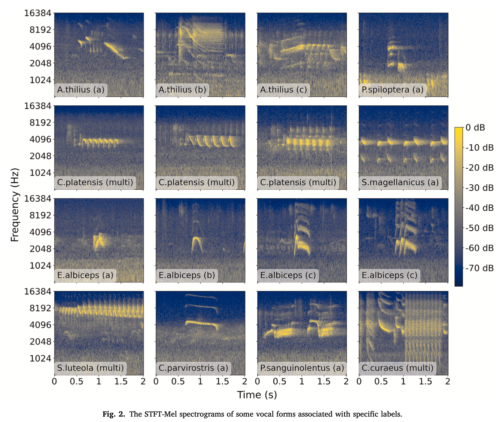
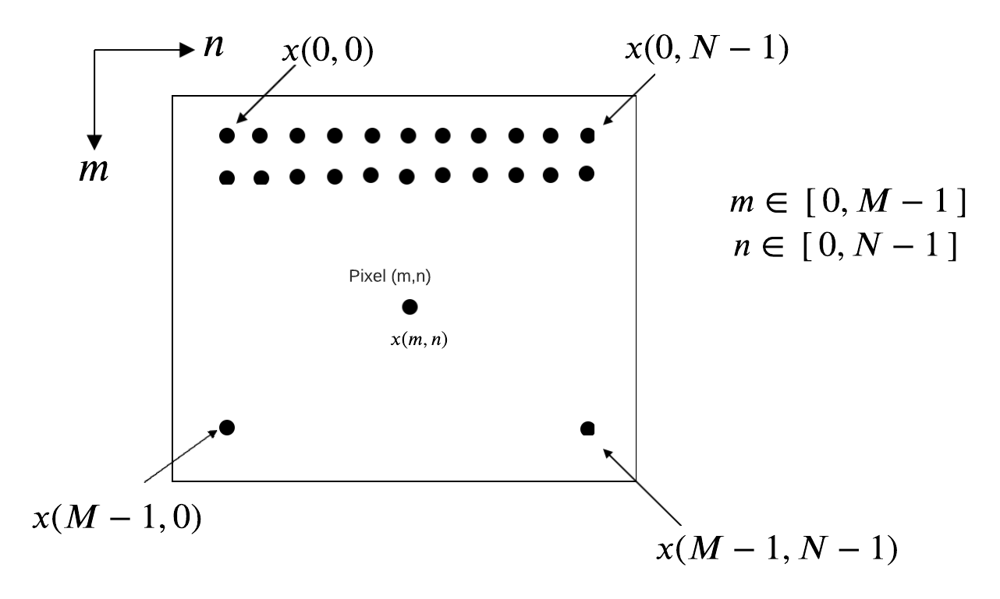
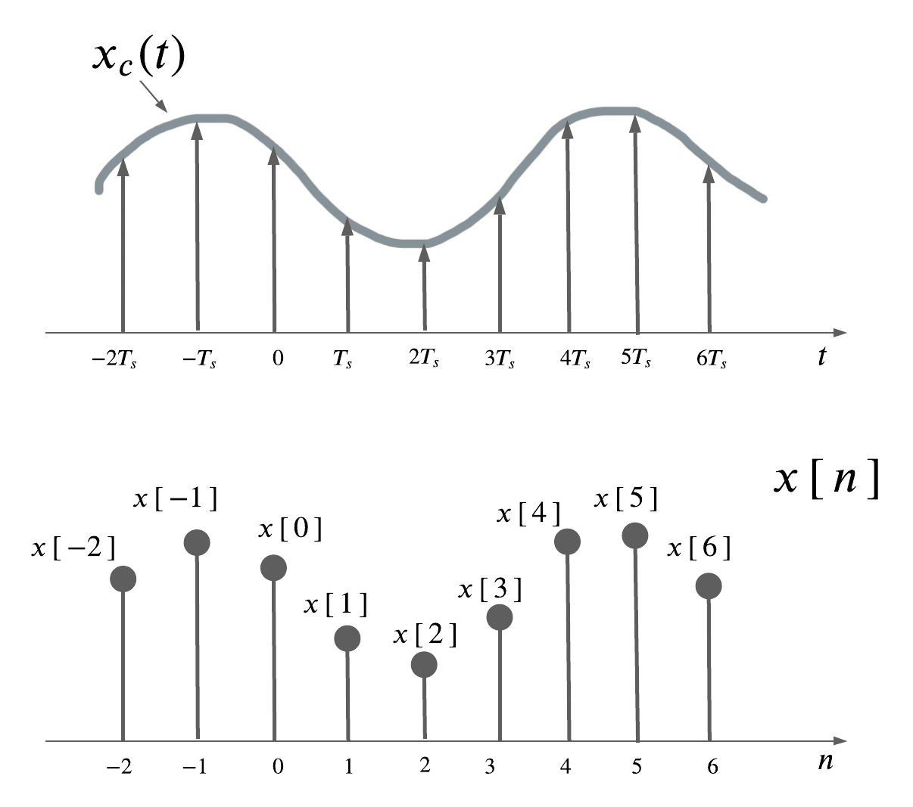
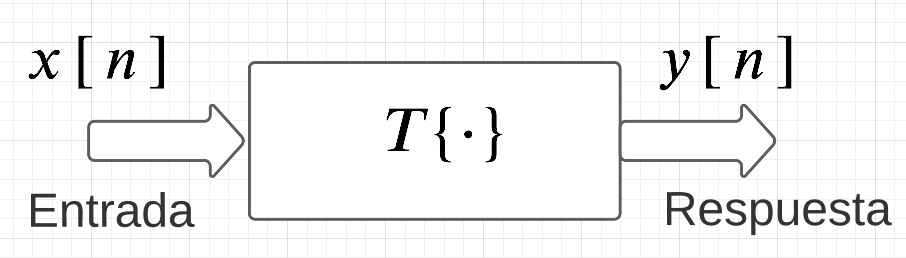
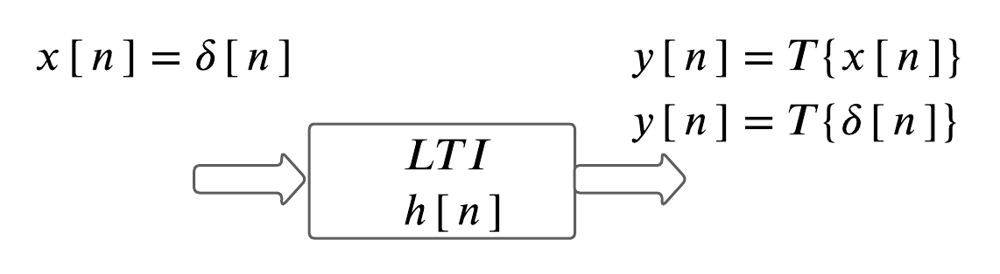

Señales y Sistemas#
Una
señalse puede pensar como si fuera una función matemática que lleva o que contiene información acerca del estado o comportamiento de de un ciertosistemafísico [Oppenheim et al., 1999].Aunque existen muchas maneras diferentes de
visualizaruna señal y la información que lleva, lo significativo es que dicha información, está contenida en ciertos tipos depatronesque pueden varíar [Morales et al., 2022].

Cómo se representa una señal?#
Las
señalesse representan matemáticamente como funciones de una o más variables independientes.En el caso de un sonido, la señal se representa como una función de una
sola variable, que es eltiempo. Mientras que, en una imagen digital, estas se representan como unafunción de dos variables, \(x(m,n)\), como se observa en la siguiente figura, donde \((m,n)\) representan las coordenadas espaciales y \(x\) representa la intensidad (brillo) en ese pixel.

Es común, en el caso de sonido, referirse a la variable independiente de la representación matemática de una señal como el
tiempo.En la representación matemática de una señal acústica, la variable independiente, puede ser
continuaodiscreta.Las señales de tiempo continuo se refieren como
señales análogas.Las señales de tiempo discreto se definen en
tiempos discretosy en consecuencia la variable independiente toma valores discretos.Las
señales en tiempo discretose representan como secuencias de números.Una secuencia es simplemente una función cuyo dominio es el conjunto de los números enteros \(\mathbb{Z}\).
Formalmente, una secuencia de números \(x\), en la que el
$n$-ésimonúmero en la secuencia se denota como \(x\,[\,n\,]\), donde \(n\) es un entero, se escribe como:
Nota
En la secuencia (o función), se usó \([\,]\) para encerrar a la variable independiente.
Nota
En funciones de tiempo continuo, se usa \((\,)\) para encerrar a la variable independiente continua.
A partir de un muestreo (
sampling) de una señal continua \(x_{c}(t)\), el valor numérico del \(n\)-ésimo número en la secuencia, es igual al valor de la señal continua \(x_{c}(t)\) en el tiempo \(nT_{s}\). Es decir,
Nota
Representación gráfica de una señal en tiempo discreto

Secuencias fundamentales#
Secuencia impulso unitario: Esta señal se denota como \(\delta[n]\) y se define como:
Una propiedad muy importante de la secuencia \(\delta[n]\), es que cualquier señal se podría representar como una suma escalada de impulsos desplazados (shifteados):
Secuencia escalón unitario:
La secuencia \(u[n]\) está relacionada a la secuencia impulso \(\delta[n]\):
O bien,
Además, la secuencia impulso unitario, se puede expresar como:
Sistemas#
Un
sistemaes un proceso que transforma una señal en otra señal.Al igual que en el caso de las señales, los
sistemas de tiempo continuoson aquellos sistemas para los que la entrada y la salida son señales de tiempo continuo.Y los
sistemas de tiempo discretoson aquellos sistemas para los que la entrada y la salida son señales de tiempo discreto.Se representa un sistema de manera gráfica en la forma de relaciones de
EntradayRespuesta.

Nota
Por conveniencia, la señal de entrada se suele etiquetar como \(x\,[\,n\,]\) mientras que la señal de salida, se etiqueta como \(y\,[\,n\,]\).
Propiedades de los sistemas#
Aditividad:Esto significa que cuando al sistema se le da la suma de diferentes señales de entrada, el resultado es la suma de las salidas de cada entrada por separado:
{kind=link}
Escalamiento:Quiere decir que cuando uno multiplica por un escalar \(c\) una señal de entrada a un sistema, la salida también se multiplica por el mismo escalar:
{kind=link}
Sistema Lineal y Principio de Superposición:Se refiere a que si las respuestas de un sistema son \(y_1[n]\) e \(y_2[n]\), cuando \(x_1[n]\) y \(x_2[n]\) son las entradas respectivas, entonces el sistema eslinealsi y sólo si se cumplen las propiedades de aditividad y escalamiento, tal como se observa en las Ecs. (9) y (10):
Estas dos propiedades se pueden combinar en el
Principio de Superposición:
donde \(c_1\) y \(c_2\) son escalares arbitrarios.
Este Principio de Superposición se puede generalizar a muchas entradas. Específicamente, si
entonces:
Invariancia en el tiempo:Esta propiedad se refiere a que un sistema esinvariante en el tiemposi cumple con que un cambio de tiempo arbitrario en la señal de entrada dada, va a producir el mismo cambio de tiempo en la salida. Si \(y\,[\,n\,] \,=\, T\{x\,[\,n\,]\}\), entonces \(y\,[\,n\,-\,n_0\,] \,=\, T\{x\,[\,n\,-\,n_0\,]\}\), donde \(n_0\) es un corrimiento arbitrario de tiempo.
Sistemas Lineales e Invariantes en el Tiempo#
Representan una clase de sistemas muy importantes en procesamiento de señales. Se dice que un sistema que posee las dos propiedades:
linealidadeinvariancia en el tiempo, es un sistema lineal e invariante en el tiempo. También se les identifica como osistemas LTI.Los
sistemas LTIsiempre se consideran con respecto a larespuesta de impulso unitario. Esto quiere decir que cuando la entrada es la señal de impulso unitario, entonces la salida es la respuesta de impulso.

En la figura, la entrada al sistema es una señal de impulso, \(x\,[\,n\,] = \delta\,[\,n\,]\), y la salida es la respuesta del sistema al impulso: